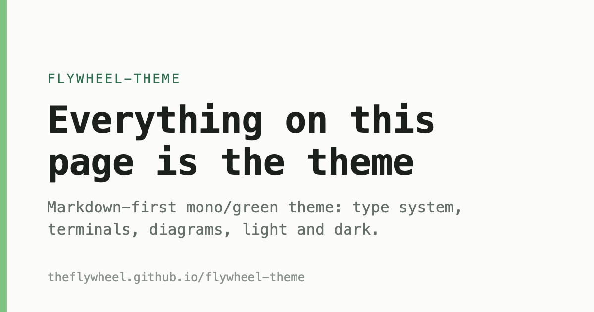

flywheel-theme
Everything on this page is the theme
One stylesheet · README for usage and exact values
A post, as it would render
field notes · registries
Why the registry is the interesting part
Every network has a phone book. The question is who gets to edit it, and whether anyone can prove they cheated.
The operator is the attack surface
When two parties exchange signed messages, the receiver’s real question is not is this signature valid but whose key am I checking it against. That answer comes from a registry — which makes the registry operator the one party worth compromising.
What transparency actually buys
An append-only log doesn’t stop the operator from lying. It makes the lie provable — which, for institutions, is the property that matters.
Published 2026-07-23 · 6 min read · part of the DeDi notes ·
Markdown
A paragraph with a link, some bold, an emphasis,
and inline code.
- standalone: one binary, one Postgres
- witnessed: a second operator checks your history
- anchored: roots pinned to an external ledger
- fetch the signed checkpoint
- demand a consistency proof
- record the verdict in your own log
Governance that cannot be audited is not governance.
$ curl -s https://dedi.proto.theflywheel.in/dedi/log/checkpoint
dedi.proto.theflywheel.in/log # origin
17 # tree size
/L8CZJh/MYGMFWDP12ejc4Y6Vpr… # root hash
— dedi.proto.theflywheel.in Az3grl… # Ed25519 signature// Anchor publishes the checkpoint and returns where it landed.
func (c *CORD) Anchor(ctx context.Context, checkpoint []byte) (Ref, error) {
if err := c.connect(); err != nil {
return Ref{}, err
}
call, err := types.NewCall(meta, "System.remark", checkpoint)
// receipts live outside the log: anchoring must never grow the tree
}
sequenceDiagram
autonumber
actor U as Search box
participant BAP as ONIX · BAP
participant D as DeDi registry
participant BPP as ONIX · BPP
participant S as scheme-bpp
U->>BAP: discover { intent: query }
BAP->>BAP: sign (BAP key)
BAP->>BPP: POST /bpp/receiver/discover
BPP->>D: lookup BAP key
D-->>BPP: signing key + inclusion proof
BPP->>BPP: verify signature
BPP->>S: /api/webhook/discover
S-->>BPP: on_discover { catalogs }
BPP->>BAP: on_discover (signed)
BAP->>D: lookup BPP key → verify
BAP-->>U: matching schemes

og/generate.sh — the
opinionated OG design: accent bar, eyebrow, title, one-liner, domain. Always light.below: model output rendered by md.js — the same renderer the blog uses
| Endpoint | Returns | Consumed by |
|---|---|---|
/dedi/lookup/… | latest record version | ONIX adapters |
/dedi/log/checkpoint | signed tree head | witnesses, browsers |
/dedi/log/proof/consistency | append-only proof | witnesses |
Components
Beckn 2.0.0 pension widow bihar · verified · rejected
Standalone
One binary, one Postgres. The log, checkpoints, and in-browser verification are always on.
Witnessed
A second operator continuously demands consistency proofs and records verdicts.
Anchored
Checkpoint roots pinned into an external ledger the operator does not control.
verified against the signed tree
- leaf 4 is included in the tree of size 17
- checkpoint signed by dedi.proto.theflywheel.in
Controls
App vocabulary
Forms, choices, conversation and shell. Brought back from a public consultation
that ran these on real phones. All of it sits on the spacing and type tokens
(--sp-*, --fs-*), so a re-tune moves everything together.
Choices
Large tap targets as primary navigation. An odd last card spans the row.
Form
Conversation
Pipeline trace
Shows the work crossing a boundary, so a reader need not take the integration on trust.
{ "status": "Compliant", "locator": "OLB-4QHY-MM8D" }Footer
Data table
headless @tanstack/table-core
engine, flywheel skin — click a header to sort, type to filter, page through. Declarative via
data-fw-table, or fwDataTable(el, {columns, data}).